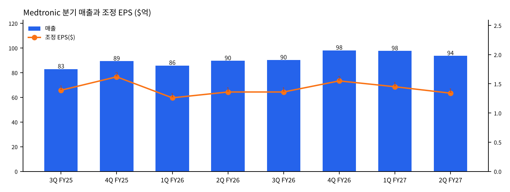
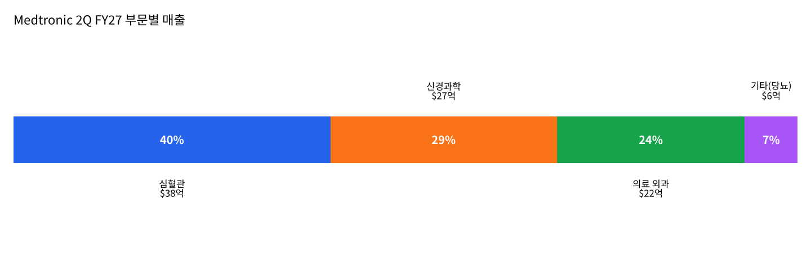

Medtronic은 여러 의료기기 사업을 한 회사에 묶어 병원에 판다. 신제품이 기존 제품의 성장 둔화를 메워야 한다. 이번 분기에 당뇨 사업을 떼어냈고(MiniMed), 심장 절제(펄스필드)가 성장을 끌고 있다.
| 항목 | 내용 |
|---|---|
| 종목 | Medtronic (MDT) · NYSE · 헬스케어(의료기기) · 아일랜드 골웨이 |
| 최근 분기(2Q FY27) | 매출 $93.64억(+4.5%, 유기 +6.5%), 조정 EPS $1.34, GAAP EPS $2.20 |
| 핵심 사업 | 심혈관, 신경과학, 의료 외과(당뇨는 2026.10.15 분리 완료) |
| 이익률 | 비GAAP 영업이익 $21.93억, 영업이익률 23.4%(전년비 -70bp), 비GAAP 총이익률 65.0%(-90bp) |
| 주주환원 | 반기(6개월) 배당 $18.42억, 자사주 $4.46억 |
| 멀티플 | PER·PEG·P/S는 08~10 항목 표 참조 |
| 직책 | 인물 | 역할·특징 |
|---|---|---|
| 회장·CEO | Geoff Martha | 포트폴리오 재편과 성장 플랫폼(심장 절제·로봇·신경조절) 투자를 이끈다 |
| CFO | Thierry Pieton | 1Q FY27 콜에서 관세 환급과 가이던스 설명(보도 기준) |
경영 스타일: 포트폴리오 재편. 당뇨 사업(MiniMed)을 IPO 뒤 교환 제의로 분리해 마쳤고 성장 사업에 집중한다. 분리 타이밍으로 2Q 조정 EPS에 $0.02 영향이 있었다고 설명했다(콜 요약 기준).
심장 절제 매출이 2Q에 +58%(미국 +80%) 늘었고 미국 점유율이 7%p 올랐다. 전기생리 사업은 $21.57억(+18.1%)이다.
Hugo 로봇이 여러 일반 수술에서 FDA 허가를 받았다. 매출 수치는 이번 발표문에 없다. Sphere-360 미국 임상 등록을 마쳤다.
다음 실적발표는 세 가지 질문에 답하는 자리다.
1. 심장 절제(전기생리) 고성장이 이어지나?
2. 3Q 유기 성장 약 5%와 FY27 7.25~7.75%를 지키나?
3. 분리 후 이익률이 회복되나?
한 줄 판정 규칙: 첫 질문의 심장 절제가 높은 성장을 유지하고 둘째 질문의 3Q 성장이 약 5%를 넘으면 약한 고리가 풀리고, 마진이 계속 내려가면 사이클의 약점이 남는다.
일정: 3Q FY27(2026년 11~1월) 실적은 2027년 2월 중순으로 보이나 회사 확정 일정은 확인 필요. 위 현재값은 2Q FY27 발표(2026.11.24) 기준이다.
| 분기 | 매출 | 순이익 | EPS | 조정 EPS | 특이 사항 |
|---|---|---|---|---|---|
| 3Q FY25 | $82.9억 | $12.9억 | 1.01 | 1.39 | |
| 4Q FY25 | $89.3억 | $10.6억 | 0.82 | 1.62 | |
| 1Q FY26 | $85.8억 | $10.4억 | 0.81 | 1.26 | |
| 2Q FY26 | $89.6억 | $13.8억 | 1.07 | 1.36 | |
| 3Q FY26 | $90.2억 | $11.4억 | 0.89 | 1.36 | |
| 4Q FY26 | $98.1억 | $12.4억 | 0.96 | 1.55 | |
| 1Q FY27 | $97.6억 | $14.7억 | 1.14 | 1.45 | 추가 1주 효과 |
| 2Q FY27 | $93.6억 | $28.0억 | 2.20 | 1.34 | MiniMed 분리 이익 포함 |
2Q FY27(2026.10.30 종료) 값은 회사 발표문 기준이다(순이익은 Medtronic 귀속 GAAP). 이전 분기 값은 트레이딩뷰 스캐너·실적 페이지다. 매출은 스캐너 총매출이라 회사 순매출과 다를 수 있다.
2Q FY27 GAAP EPS $2.20과 순이익 $28.0억에는 MiniMed 분리의 세전 이익 약 $20억이 들어 있고, 조정 EPS에서는 제외된다.

흐름 요약: 2Q 매출 $93.6억은 전년 $89.6억 대비 +4.5%(내 계산, 발표 +4.5%)이고 유기 +6.5%다. 조정 EPS는 $1.34로 전년 $1.36보다 1.4% 낮다. 최근 4분기 조정 EPS 합은 $5.70(전년 4분기 합 $5.63, +1%, 내 계산)이다. GAAP EPS는 분리 이익으로 일시적으로 높아졌다.
| 부문 | 2Q FY27 매출 | 성장 |
|---|---|---|
| 심혈관(전기생리 포함) | $37.85억 | +10.2% (전기생리 $21.57억 +18.1%, 중재심장 $8.53억 -0.5%, 심장수술 $4.47억 +2.1%, 말초혈관 $3.29억 +4.1%) |
| 신경과학 | $27.05억 | +5.1% (척추·두개 $13.73억 +5.7%, 특수치료 $7.86억 +5.8%, 신경조절 $5.46억 +2.9%) |
| 의료 외과 | $22.45억 | +3.9% (외과·내시경 $17.13억 +2.7%, 급성기 모니터링 $5.32억 +8.1%) |
| 기타(당뇨) | $6.29억 | -20.6%, 분리 완료로 앞으로 사라짐 |

심혈관이 전체의 약 40%이고 성장을 이끈다. 당뇨는 분리됐지만 2Q에는 마지막으로 매출에 잡혔다.
Medtronic은 의료기기로 환자의 삶을 개선하는 것을 목표로 한다.
| 축 | 내용 |
|---|---|
| 성장 축 | 심장 절제, 로봇(Hugo), 신경조절 |
| 가이던스 | FY27 유기 +7.25~7.75%, 조정 EPS $5.94~6.00(유지) |
| 구조 | MiniMed 분리 완료(2026.10.15) |

| 이동평균 | 값 | 종가 대비 | 해석 |
|---|---|---|---|
| 5일선 | $98.69 | +2.7% | 현재가가 아래 |
| 20일선 | $100.63 | +4.8% | 현재가가 아래 |
| 50일선 | $94.89 | -1.2% | 현재가가 위 |
| 100일선 | $91.59 | -4.7% | 현재가가 위 |
| 200일선 | $88.16 | -8.2% | 현재가가 위 |
52주 고점 $106.33(2025-11-26), 52주 저점 $73.31(2026-06-02). 종가 $96.06(2026-11-25) 기준이다.
| 규칙 | 기준 | 현재 값 | 신호 |
|---|---|---|---|
| 장기 추세 필터 | 종가 vs 200일선 | $96.06 > $88.16 | 매수 |
| 중장기 교차 | 50일선 vs 200일선 | $94.89 > $88.16 | 매수 |
| 단기 교차 | 20일선 vs 50일선 | $100.63 > $94.89 | 매수 |
| 돈키언 채널 | 55일 고가 $106.20 / 저가 $85.22 | 중간값 $95.71 위 | 매수 |
| 1개월 모멘텀 | 21거래일 수익률 | +2.2% (기준 $93.95) | 매수 |
| 3개월 모멘텀 | 63거래일 수익률 | +6.8% (기준 $89.97) | 매수 |
| 6개월 모멘텀 | 126거래일 수익률 | +27.1% (기준 $75.57) | 매수 |
| 12개월 모멘텀 | 252거래일 수익률 | -6.9% (기준 $103.20) | 매도 |
| 종합 (8개 평균) | +0.75 | 매수 우위 |
해석: 8개 신호 중 매수 7개, 매도 1개(점수 +0.75, 매수 우위)다. 14일 ATR $2.61 (2.7%).
| 가격·조건 | 무엇이 바뀌나 | 의미 |
|---|---|---|
| $88.16 | 종가 vs 200일선 | 이탈하면 매수 → 매도 |
| $93.95 | 1개월 기준가 | 이탈하면 매수 → 매도 |
| $89.97 | 3개월 기준가 | 이탈하면 매수 → 매도 |
| $75.57 | 6개월 기준가 | 이탈하면 매수 → 매도 |
| $103.20 | 12개월 기준가 | 돌파하면 매도 → 매수 |
| $95.71 | 돈키언 중간값 | 이탈하면 매수 → 매도 |
| 50일선이 200일선 아래로 | 50/200 교차 | 매수 → 매도 |
| 구분 | 가격대 | 근거 |
|---|---|---|
| 저항 1 | $98.69 | 5일선 |
| 저항 2 | $100.63 | 20일선 |
| 지지 1 | $94.89 | 50일선 |
| 지지 2 | $91.59 | 100일선 |
점수는 +0.75(매수 우위)다. 14일 ATR은 $2.61로 현재가의 2.7%다. 가까운 저항 $98.69을 종가로 넘는지와 가까운 지지 $94.89를 지키는지가 신호 전환의 기준이다. 2Q 실적 발표(11/24) 당일 주가가 약 3% 내렸다. (내 가정, 매매 권유 아님)
| 악재 요인 | 내용 | 강도 |
|---|---|---|
| 성장 둔화 | 심장 절제 +78%(1Q) → +58%(2Q), 3Q 유기 성장 약 5%로 2Q(6.5%)보다 낮게 제시 | 중간 |
| 이익률 | 2Q 비GAAP 영업이익률 -70bp, 총이익률 -90bp. 가격 혜택이 줄었다는 설명(요약 보도) | 중간 |
| 관세 | 1Q 콜에서 관세 환급이 지출을 거의 메웠다고 했다. 환급은 가이던스에 반영하지 않음 | 중간 |
| 분리 영향 | MiniMed 분리로 유기 성장에 약 20bp 부담, 2Q 조정 EPS에 $0.02 영향 | 참고 |
| 티커 | 회사 | PER(TTM) | PEG | P/S | EPS 성장(YoY) |
|---|---|---|---|---|---|
| MDT | Medtronic | 18.3배(GAAP, 분리 이익 포함) | 0.46(이익 포함) | 3.22배 | +40% |
| BSX | Boston Scientific | 19.1배 | 0.71 | 3.04배 | +26% |
| SYK | Stryker | 35.3배 | 1.48 | 4.74배 | +23% |
| ABT | Abbott | 39.9배 | – | 3.80배 | -66% |
| ISRG | Intuitive Surgical | 51.7배 | 5.59 | 13.19배 | +9% |
| EW | Edwards Lifesciences | 62.1배 | – | 9.18배 | -27% |
MDT 첫 행은 스캐너 값이고 GAAP EPS에 분리 이익이 들어 있어 PER·PEG가 낮게 나온다. 이익 제외 조정 PER은 약 16.7배다(내 계산, 10 항목 참조).
비교 결론: Medtronic의 조정 PER 약 16.7배는 Boston Scientific(19.1배, GAAP)·Stryker(35.3배)·Abbott(39.9배)보다 낮다. 다만 조정 EPS 성장률이 낮아(TTM +1%) PEG는 높다.
MiniMed 분리로 대차대조표가 바뀌었다. 스캐너는 이번 분기 현금·부채를 주지 않았고, 발표문의 현금은 $8.66억이다(단기투자 포함 여부 확인 필요).
| 지표 | 값 | 출처 | 해석 |
|---|---|---|---|
| 현금(회사 발표) | $8.66억 | 2Q 발표문 | 분리 이후 값, 단기투자는 포함 여부 확인 필요 |
| 총부채 | 확인 필요 | – | 스캐너에 값 없음. 이전 분기 $282억은 분리 전 |
| 잉여현금흐름(TTM) | $70.05억 | 스캐너 | TTM 매출 $379.4억의 약 18.5%(내 계산) |
| 반기 영업현금·잉여현금 | $35.15억 · $26.21억 | 2Q 발표문 | 설비투자 $8.94억 |
| 기준 | 매출 | P/S | 비고 |
|---|---|---|---|
| P/S (TTM) | $379.4억 | 3.22배 | 스캐너, 종가 $95.16 |
| 동종 | – | – | BSX 3.04, SYK 4.74, ABT 3.80, ISRG 13.19, EW 9.18 |
해석: P/S 3.2배는 Boston Scientific(3.0배)과 비슷하고 Stryker(4.7배)·Abbott(3.8배)보다 낮다. 분리 이후 매출 기준이 달라져 TTM 매출에는 당뇨가 아직 포함된다(내 해석).
EBITDA·FCF는 스캐너 TTM 값이다. GAAP에 분리 이익이 있어 조정 값을 함께 본다.
| 지표 | 값 | 산출 |
|---|---|---|
| EBITDA(TTM) | $127.1억 | 스캐너(분리 이익 포함 여부 확인 필요) |
| FCF 마진 | 약 18.5% | FCF ÷ TTM 매출(내 계산) |
| PER(GAAP TTM) | 18.3배 | 스캐너, TTM EPS $5.20(분리 이익 포함) |
| PER(조정 TTM) | 약 16.7배 | $95.16 ÷ $5.70(내 계산) |
| PER(FY27 조정 가이던스) | 약 15.9배 | $95.16 ÷ $5.97(중간값) |
| 방식 | PER | EPS 성장률 | PEG | 판정 |
|---|---|---|---|---|
| 조정 EPS (TTM $5.70) | 16.7배 | +1% ($5.63 → $5.70) | 약 14 | 기준 초과 |
| FY27 가이던스 (조정 $5.97 중간값) | 15.9배 | +8% (FY26 $5.53 → $5.97) | 약 2.0 | 기준 초과 |
| 스캐너 GAAP (분리 이익 포함) | 18.3배 | +40% | 0.46 | 일회성 이익 포함 |
판정: 조정 EPS 기준 PEG 약 2.0(FY27 가이던스) → 1.0 초과. 스캐너 PEG 0.46은 2Q GAAP EPS에 들어간 세전 약 $20억 분리 이익 때문에 EPS 성장률이 +40%로 부풀려진 값이다. 이익을 뺀 조정 EPS 성장률은 TTM +1%, FY27 가이던스 +8%다.

Medtronic의 사이클: 기존 사업 이익이 신제품 투자로 가서 신제품 성장이 다시 매출이 된다.
| 고리 | 현재 숫자·근거 |
|---|---|
| ① 기존 사업 매출 | 2Q FY27 $93.64억(유기 +6.5%), 심혈관 +10.2% |
| ② 이익 | 조정 EPS $1.34, FY27 가이던스 $5.94~6.00 |
| ③ 신제품 투자 | 1Q에 Cornerstone Robotics $7억 계약(1Q 발표 기준), 반기 설비투자 $8.94억 |
| ④ 신제품 성장 | 심장 절제 +58%(미국 +80%), Hugo 일반 수술 허가 |
사이클의 특징: 약한 고리는 마진 하락(②)과 성장 둔화 가이던스(3Q 약 5%)다. 분리 이후 구조는 단순해졌다.